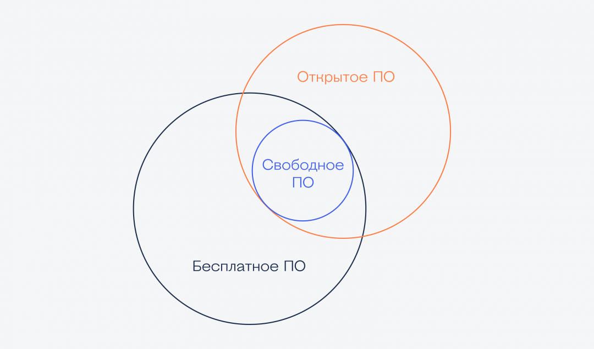

<!DOCTYPE html>
<html lang="en">
  <head>
    <meta charset="utf-8" />
    <meta name="viewport" content="width=device-width, initial-scale=1.0, maximum-scale=1.0, user-scalable=no" />

    <title></title>
    <link rel="stylesheet" href="dist/reveal.css" />
    <link rel="stylesheet" href="dist/theme/white.css" id="theme" />
    <link rel="stylesheet" href="plugin/highlight/zenburn.css" />
	<link rel="stylesheet" href="css/layout.css" />
	<link rel="stylesheet" href="plugin/customcontrols/style.css">


    <script defer src="dist/fontawesome/all.min.js"></script>

	<script type="text/javascript">
		var forgetPop = true;
		function onPopState(event) {
			if(forgetPop){
				forgetPop = false;
			} else {
				parent.postMessage(event.target.location.href, "app://obsidian.md");
			}
        }
		window.onpopstate = onPopState;
		window.onmessage = event => {
			if(event.data == "reload"){
				window.document.location.reload();
			}
			forgetPop = true;
		}

		function fitElements(){
			const itemsToFit = document.getElementsByClassName('fitText');
			for (const item in itemsToFit) {
				if (Object.hasOwnProperty.call(itemsToFit, item)) {
					var element = itemsToFit[item];
					fitElement(element,1, 1000);
					element.classList.remove('fitText');
				}
			}
		}

		function fitElement(element, start, end){

			let size = (end + start) / 2;
			element.style.fontSize = `${size}px`;

			if(Math.abs(start - end) < 1){
				while(element.scrollHeight > element.offsetHeight){
					size--;
					element.style.fontSize = `${size}px`;
				}
				return;
			}

			if(element.scrollHeight > element.offsetHeight){
				fitElement(element, start, size);
			} else {
				fitElement(element, size, end);
			}		
		}


		document.onreadystatechange = () => {
			fitElements();
			if (document.readyState === 'complete') {
				if (window.location.href.indexOf("?export") != -1){
					parent.postMessage(event.target.location.href, "app://obsidian.md");
				}
				if (window.location.href.indexOf("print-pdf") != -1){
					let stateCheck = setInterval(() => {
						clearInterval(stateCheck);
						window.print();
					}, 250);
				}
			}
	};


        </script>
  </head>
  <body>
    <div class="reveal">
      <div class="slides"><section  data-markdown><script type="text/template"><!-- .slide: class="drop" -->
<div class="" style="position: absolute; left: 0px; top: 0px; height: 700px; width: 960px; min-height: 700px; display: flex; flex-direction: column; align-items: center; justify-content: center" absolute="true">

### Безопасная разработка программного обеспечения
Занятие 12. Лицензии, композиционный анализ и всё, о чем не успели поговорить

09.12.2024
</div></script></section><section  data-markdown><script type="text/template"><!-- .slide: class="drop" -->
<div class="" style="position: absolute; left: 0px; top: 0px; height: 700px; width: 960px; min-height: 700px; display: flex; flex-direction: column; align-items: center; justify-content: center" absolute="true">

Организационные моменты:
- 49 и более баллов за ЛР - освобождение от практической части на экзамене.
- Вопросы к экзамену и пример практики выданы старосте.
</div></script></section><section  data-markdown><script type="text/template"><!-- .slide: class="drop" -->
<div class="" style="position: absolute; left: 0px; top: 0px; height: 700px; width: 960px; min-height: 700px; display: flex; flex-direction: column; align-items: center; justify-content: center" absolute="true">



src: [Журнал "Код"](https://thecode.media/free-software/)
</div></script></section><section  data-markdown><script type="text/template"><!-- .slide: class="drop" -->
<div class="" style="position: absolute; left: 0px; top: 0px; height: 700px; width: 960px; min-height: 700px; display: flex; flex-direction: column; align-items: center; justify-content: center" absolute="true">

Существует более 70 признанных лицензий открытого ПО.

Наиболее часто встречающиеся:
- MIT
- Apache
- GPL
</div></script></section><section  data-markdown><script type="text/template"><!-- .slide: class="drop" -->
<div class="" style="position: absolute; left: 0px; top: 0px; height: 700px; width: 960px; min-height: 700px; display: flex; flex-direction: column; align-items: center; justify-content: center" absolute="true">

[MIT License (X11 license)](https://opensource.org/license/mit)
</div></script></section><section  data-markdown><script type="text/template"><!-- .slide: class="drop" -->
<div class="" style="position: absolute; left: 0px; top: 0px; height: 700px; width: 960px; min-height: 700px; display: flex; flex-direction: column; align-items: center; justify-content: center" absolute="true">

[Apache-2.0 License](https://www.apache.org/licenses/LICENSE-2.0.html)
</div></script></section><section  data-markdown><script type="text/template"><!-- .slide: class="drop" -->
<div class="" style="position: absolute; left: 0px; top: 0px; height: 700px; width: 960px; min-height: 700px; display: flex; flex-direction: column; align-items: center; justify-content: center" absolute="true">

[GPLv2](https://www.gnu.org/licenses/old-licenses/gpl-2.0.html)

[GPLv3](https://www.gnu.org/licenses/gpl-3.0.html)
</div></script></section><section  data-markdown><script type="text/template"><!-- .slide: class="drop" -->
<div class="" style="position: absolute; left: 0px; top: 0px; height: 700px; width: 960px; min-height: 700px; display: flex; flex-direction: column; align-items: center; justify-content: center" absolute="true">

[Don't be a dick license](https://dbad-license.org/)

Being a dick includes - but is not limited to - the following instances:

 1a. Outright copyright infringement - Don't just copy this and change the name.
 
 1b. Selling the unmodified original with no work done what-so-ever, that's REALLY being a dick.
 
 1c. Modifying the original work to contain hidden harmful content. That would make you a PROPER dick.
</div></script></section><section  data-markdown><script type="text/template"><!-- .slide: class="drop" -->
<div class="" style="position: absolute; left: 0px; top: 0px; height: 700px; width: 960px; min-height: 700px; display: flex; flex-direction: column; align-items: center; justify-content: center" absolute="true">

[Beerware License](https://web.archive.org/web/20160322002352/http://www.cs.trincoll.edu/hfoss/wiki/Chris_Fei:_Beerware_License)
```
/*
 * ----------------------------------------------------------------------------
 * "THE BEER-WARE LICENSE" (Revision 42):
 * <phk@FreeBSD.ORG> wrote this file. As long as you retain this notice you
 * can do whatever you want with this stuff. If we meet some day, and you think
 * this stuff is worth it, you can buy me a beer in return Poul-Henning Kamp
 * ----------------------------------------------------------------------------
 */

```
</div></script></section><section  data-markdown><script type="text/template"><!-- .slide: class="drop" -->
<div class="" style="position: absolute; left: 0px; top: 0px; height: 700px; width: 960px; min-height: 700px; display: flex; flex-direction: column; align-items: center; justify-content: center" absolute="true">

Лицензирование открытого ПО

Риски:
- отсутствие лицензии
- вирусная лицензия
- несовместимая лицензия
- лицензия с экспортными ограничениями
- смена лицензии со временем
</div></script></section><section  data-markdown><script type="text/template"><!-- .slide: class="drop" -->
<div class="" style="position: absolute; left: 0px; top: 0px; height: 700px; width: 960px; min-height: 700px; display: flex; flex-direction: column; align-items: center; justify-content: center" absolute="true">

Отсутствие лицензии

Если лицензия отсутствует, код использовать нельзя (почти всегда)

Что делать?
- Искать в оригинальном источнике проекта
- Связаться с авторами
- Проверить лицензии площадки размещения
</div></script></section><section  data-markdown><script type="text/template"><!-- .slide: class="drop" -->
<div class="" style="position: absolute; left: 0px; top: 0px; height: 700px; width: 960px; min-height: 700px; display: flex; flex-direction: column; align-items: center; justify-content: center" absolute="true">

[Стандартная лицензия GitHub](https://docs.github.com/en/site-policy/github-terms/github-terms-of-service)
>If you set your pages and repositories to be viewed publicly, you grant each User of GitHub a nonexclusive, worldwide license to use, display, and perform Your Content through the GitHub Service and to reproduce Your Content solely on GitHub as permitted through GitHub's functionality (for example, through forking).
</div></script></section><section  data-markdown><script type="text/template"><!-- .slide: class="drop" -->
<div class="" style="position: absolute; left: 0px; top: 0px; height: 700px; width: 960px; min-height: 700px; display: flex; flex-direction: column; align-items: center; justify-content: center" absolute="true">

Вирусные лицензии

Strong copyleft - при распространении продукта с этой лицензией нужно быть готовым открыть его код по тем же условиям. Например GPLv3

Что делать?
- Прочитать текст такой лицензии
- Запросить у производителя аналогичную коммерческую лицензию
- Искать замену
</div></script></section><section  data-markdown><script type="text/template"><!-- .slide: class="drop" -->
<div class="" style="position: absolute; left: 0px; top: 0px; height: 700px; width: 960px; min-height: 700px; display: flex; flex-direction: column; align-items: center; justify-content: center" absolute="true">

Несовместимые лицензии


Src: [The Free-Libre / Open Source Software (FLOSS) License Slide](https://dwheeler.com/essays/floss-license-slide.html)
</div></script></section><section  data-markdown><script type="text/template"><!-- .slide: class="drop" -->
<div class="" style="position: absolute; left: 0px; top: 0px; height: 700px; width: 960px; min-height: 700px; display: flex; flex-direction: column; align-items: center; justify-content: center" absolute="true">

Экспортные ограничения
>"You shall not export Products listed in Supplement 2 to part 774 of the EAR for military end-users, as defined in part 774.21, to the People's Republic of China"
</div></script></section><section  data-markdown><script type="text/template"><!-- .slide: class="drop" -->
<div class="" style="position: absolute; left: 0px; top: 0px; height: 700px; width: 960px; min-height: 700px; display: flex; flex-direction: column; align-items: center; justify-content: center" absolute="true">

Смена лицензии со временем

Примерно 2% проектов меняют лицензию в течение жизни


</div></script></section><section  data-markdown><script type="text/template"><!-- .slide: class="drop" -->
<div class="" style="position: absolute; left: 0px; top: 0px; height: 700px; width: 960px; min-height: 700px; display: flex; flex-direction: column; align-items: center; justify-content: center" absolute="true">

Частые проблемы при разработке:
- Зависимости не фиксируются
- Зависимости фиксируются, но:
	- включением в код
	- в .txt файле
	- без версий
	- без фиксированной версии
	- без транзитивности
	- без хэш-сумм
	- без связи с релизами продуктов
	- без сохранения
</div></script></section><section  data-markdown><script type="text/template"><!-- .slide: class="drop" -->
<div class="" style="position: absolute; left: 0px; top: 0px; height: 700px; width: 960px; min-height: 700px; display: flex; flex-direction: column; align-items: center; justify-content: center" absolute="true">

- 85% уязвимостей в продуктах - через транзитивные зависимости
- 200 - среднее количество зависимостей в "серверных" проектах
- 1500 - среднее количество зависимостей в JavaScript-проектах
</div></script></section><section  data-markdown><script type="text/template"><!-- .slide: class="drop" -->
<div class="" style="position: absolute; left: 0px; top: 0px; height: 700px; width: 960px; min-height: 700px; display: flex; flex-direction: column; align-items: center; justify-content: center" absolute="true">

Dependency hell


src: [xkcd 2347](https://xkcd.com/2347/)
</div></script></section><section  data-markdown><script type="text/template"><!-- .slide: class="drop" -->
<div class="" style="position: absolute; left: 0px; top: 0px; height: 700px; width: 960px; min-height: 700px; display: flex; flex-direction: column; align-items: center; justify-content: center" absolute="true">


</div></script></section><section  data-markdown><script type="text/template"><!-- .slide: class="drop" -->
<div class="" style="position: absolute; left: 0px; top: 0px; height: 700px; width: 960px; min-height: 700px; display: flex; flex-direction: column; align-items: center; justify-content: center" absolute="true">


</div></script></section><section  data-markdown><script type="text/template"><!-- .slide: class="drop" -->
<div class="" style="position: absolute; left: 0px; top: 0px; height: 700px; width: 960px; min-height: 700px; display: flex; flex-direction: column; align-items: center; justify-content: center" absolute="true">

Dependency hell


src: [xkcd 1978](https://xkcd.com/1987/)
</div></script></section><section  data-markdown><script type="text/template"><!-- .slide: class="drop" -->
<div class="" style="position: absolute; left: 0px; top: 0px; height: 700px; width: 960px; min-height: 700px; display: flex; flex-direction: column; align-items: center; justify-content: center" absolute="true">

Композиционный анализ ПО

Инвентаризация -> Проверка -> Действие
</div></script></section><section  data-markdown><script type="text/template"><!-- .slide: class="drop" -->
<div class="" style="position: absolute; left: 0px; top: 0px; height: 700px; width: 960px; min-height: 700px; display: flex; flex-direction: column; align-items: center; justify-content: center" absolute="true">

Инвентаризация ПО

- Разбор манифестов
- Разрешение транзитива
- Распознавание включений
- Формирование Реестра Компонентных Связей (РКС, Software Bill of Materials, SBoM)
</div></script></section><section  data-markdown><script type="text/template"><!-- .slide: class="drop" -->
<div class="" style="position: absolute; left: 0px; top: 0px; height: 700px; width: 960px; min-height: 700px; display: flex; flex-direction: column; align-items: center; justify-content: center" absolute="true">

Стандарты и форматы SBoM:
- CycloneDX ([SBoM examples](https://github.com/CycloneDX/bom-examples/tree/master/SBOM))
	- Формат ИСП РАН ([sbom-checker](https://gitlab.community.ispras.ru/sdl-tools/sbom-checker))
- SPDX
- SWID
</div></script></section><section  data-markdown><script type="text/template"><!-- .slide: class="drop" -->
<div class="" style="position: absolute; left: 0px; top: 0px; height: 700px; width: 960px; min-height: 700px; display: flex; flex-direction: column; align-items: center; justify-content: center" absolute="true">

Открытые инструменты SCA:
- [Trivy](https://trivy.dev/latest/)
- [Dependency check](https://owasp.org/www-project-dependency-check/)
- [CDXGen](https://github.com/CycloneDX/cdxgen)
- [Grype](https://github.com/anchore/grype)
</div></script></section><section  data-markdown><script type="text/template"><!-- .slide: class="drop" -->
<div class="" style="position: absolute; left: 0px; top: 0px; height: 700px; width: 960px; min-height: 700px; display: flex; flex-direction: column; align-items: center; justify-content: center" absolute="true">

Цепочка проверок выпускаемых продуктов:
1. Проверка на наличие вредоносного кода
2. Регулярное сканирование исходных кодов
3. Сканирование исходных кодов при сборке (CI)
4. Сканирование артефактов сборки (CI)
5. Сканирование образов сборки (CI)

Фиксация SBoM на этапах 2-5
</div></script></section><section  data-markdown><script type="text/template"><!-- .slide: class="drop" -->
<div class="" style="position: absolute; left: 0px; top: 0px; height: 700px; width: 960px; min-height: 700px; display: flex; flex-direction: column; align-items: center; justify-content: center" absolute="true">

Цепочка проверок **выпущенных** продуктов:

6. Регулярная перепроверка компонентов
7. Архивация SBoM при выводе компонентов из эксплуатации
</div></script></section><section  data-markdown><script type="text/template"><!-- .slide: class="drop" -->
<div class="" style="position: absolute; left: 0px; top: 0px; height: 700px; width: 960px; min-height: 700px; display: flex; flex-direction: column; align-items: center; justify-content: center" absolute="true">

Контроль исправлений в большой пакетной базе:
https://packages.altlinux.org/ru/errata/
</div></script></section><section  data-markdown><script type="text/template"><!-- .slide: class="drop" -->
<div class="" style="position: absolute; left: 0px; top: 0px; height: 700px; width: 960px; min-height: 700px; display: flex; flex-direction: column; align-items: center; justify-content: center" absolute="true">

Формирование политик безопасности
- Информационные
	- Отправка отчетов
	- Постановка задач
	- Отправка результатов в трекер
- Блокирующие
	- Заблокировать сборку
</div></script></section><section  data-markdown><script type="text/template"><!-- .slide: class="drop" -->
<div class="" style="position: absolute; left: 0px; top: 0px; height: 700px; width: 960px; min-height: 700px; display: flex; flex-direction: column; align-items: center; justify-content: center" absolute="true">

По каким критериям можно формировать политику безопасности?

Пакет:
- [PURL](https://ru.wikipedia.org/wiki/PURL), [CPE](https://en.wikipedia.org/wiki/Common_Platform_Enumeration)
- Технология
- Тип пакета
- Транзитивность
- Окружение
- и т.д.
</div></script></section><section  data-markdown><script type="text/template"><!-- .slide: class="drop" -->
<div class="" style="position: absolute; left: 0px; top: 0px; height: 700px; width: 960px; min-height: 700px; display: flex; flex-direction: column; align-items: center; justify-content: center" absolute="true">

По каким критериям можно формировать политику безопасности?

Уязвимость:
- ID (CVE)
- CWE
- CVSS
- Impact
- Наличие эксплойта
- Наличие патча
- и т.д.
</div></script></section><section  data-markdown><script type="text/template"><!-- .slide: class="drop" -->
<div class="" style="position: absolute; left: 0px; top: 0px; height: 700px; width: 960px; min-height: 700px; display: flex; flex-direction: column; align-items: center; justify-content: center" absolute="true">

По каким критериям можно формировать политику безопасности?

Лицензии:
- Тип лицензии
- Совместимость лицензии
- Экспортные ограничения
- Прочие ограничения
</div></script></section><section  data-markdown><script type="text/template"><!-- .slide: class="drop" -->
<div class="" style="position: absolute; left: 0px; top: 0px; height: 700px; width: 960px; min-height: 700px; display: flex; flex-direction: column; align-items: center; justify-content: center" absolute="true">

Внедрение политик безопасности

- Насаждение политик (быстро, но чревато борьбой с последствиями)
- Проращивание политик (медленнее, но формирует культуру)
</div></script></section><section  data-markdown><script type="text/template"><!-- .slide: class="drop" -->
<div class="" style="position: absolute; left: 0px; top: 0px; height: 700px; width: 960px; min-height: 700px; display: flex; flex-direction: column; align-items: center; justify-content: center" absolute="true">

Подведение итогов курса: что успели

Наш план с первого занятия:
- Сборка
- SAST
- DAST
- Архитектурный анализ
- SCA
- VM
</div></script></section><section  data-markdown><script type="text/template"><!-- .slide: class="drop" -->
<div class="" style="position: absolute; left: 0px; top: 0px; height: 700px; width: 960px; min-height: 700px; display: flex; flex-direction: column; align-items: center; justify-content: center" absolute="true">

Подведение итогов курса: чего не успели (1/2)
- Углубление в работу компилятора. Начать с: оптимизация, дебаг-символы
- Уязвимости и работа с ними в веб-разработке. Начать с: [ЛР portswigger](https://portswigger.net/web-security)
- Подпись кода/контейнеров/пакетов в контексте защиты информации
- Фаззинг других языков. [Go](https://go.dev/doc/security/fuzz/), [Java (Jazzer)](https://github.com/CodeIntelligenceTesting/jazzer), [Python (Atheris)](https://github.com/google/atheris), и др.
- [Structure-aware фаззинг](https://github.com/google/fuzzing/blob/master/docs/structure-aware-fuzzing.md)
</div></script></section><section  data-markdown><script type="text/template"><!-- .slide: class="drop" -->
<div class="" style="position: absolute; left: 0px; top: 0px; height: 700px; width: 960px; min-height: 700px; display: flex; flex-direction: column; align-items: center; justify-content: center" absolute="true">

Подведение итогов курса: чего не успели (2/2)
- Углубление в методологию безопасной разработки. Начать с: [PT AppSec TableTop](https://static.ptsecurity.com/docs/knowledge-base/metodologiya-appsec-table-top.pdf)
- Углубление в управление уязвимостями. Начать с: [Отчет PT VM 2022-2023](https://www.ptsecurity.com/ru-ru/research/analytics/the-consequences-of-delays-in-remediating-vulnerabilities-2022-2023/?utm_source=pt&utm_medium=article&utm_campaign=6-dnej-na-ustanovku-obnovlenij&utm_content=news#id1)
</div></script></section><section  data-markdown><script type="text/template"><!-- .slide: class="drop" -->
<div class="" style="position: absolute; left: 0px; top: 0px; height: 700px; width: 960px; min-height: 700px; display: flex; flex-direction: column; align-items: center; justify-content: center" absolute="true">

Источники:
- Лекции Алексея Смирнова в рамках курса повышения квалификации ИСП РАН по архитектурному анализу
</div></script></section></div>
    </div>

    <script src="dist/reveal.js"></script>

    <script src="plugin/markdown/markdown.js"></script>
    <script src="plugin/highlight/highlight.js"></script>
    <script src="plugin/zoom/zoom.js"></script>
    <script src="plugin/notes/notes.js"></script>
    <script src="plugin/math/math.js"></script>
	<script src="plugin/mermaid/mermaid.js"></script>
	<script src="plugin/chart/chart.min.js"></script>
	<script src="plugin/chart/plugin.js"></script>
	<script src="plugin/customcontrols/plugin.js"></script>

    <script>
      function extend() {
        var target = {};
        for (var i = 0; i < arguments.length; i++) {
          var source = arguments[i];
          for (var key in source) {
            if (source.hasOwnProperty(key)) {
              target[key] = source[key];
            }
          }
        }
        return target;
      }

	  function isLight(color) {
		let hex = color.replace('#', '');

		// convert #fff => #ffffff
		if(hex.length == 3){
			hex = `${hex[0]}${hex[0]}${hex[1]}${hex[1]}${hex[2]}${hex[2]}`;
		}

		const c_r = parseInt(hex.substr(0, 2), 16);
		const c_g = parseInt(hex.substr(2, 2), 16);
		const c_b = parseInt(hex.substr(4, 2), 16);
		const brightness = ((c_r * 299) + (c_g * 587) + (c_b * 114)) / 1000;
		return brightness > 155;
	}

	var bgColor = getComputedStyle(document.documentElement).getPropertyValue('--r-background-color').trim();
	var isLight = isLight(bgColor);

	if(isLight){
		document.body.classList.add('has-light-background');
	} else {
		document.body.classList.add('has-dark-background');
	}

      // default options to init reveal.js
      var defaultOptions = {
        controls: true,
        progress: true,
        history: true,
        center: true,
        transition: 'default', // none/fade/slide/convex/concave/zoom
        plugins: [
          RevealMarkdown,
          RevealHighlight,
          RevealZoom,
          RevealNotes,
          RevealMath.MathJax3,
		  RevealMermaid,
		  RevealChart,
		  RevealCustomControls,
        ],


    	allottedTime: 120 * 1000,

		mathjax3: {
			mathjax: 'plugin/math/mathjax/tex-mml-chtml.js',
		},
		markdown: {
		  gfm: true,
		  mangle: true,
		  pedantic: false,
		  smartLists: false,
		  smartypants: false,
		},

		mermaid: {
			theme: isLight ? 'default' : 'dark',
		},

		customcontrols: {
			controls: [
			]
		},
      };

      // options from URL query string
      var queryOptions = Reveal().getQueryHash() || {};

      var options = extend(defaultOptions, {"width":960,"height":700,"margin":0.04,"controls":true,"progress":true,"slideNumber":false,"transition":"slide","transitionSpeed":"default"}, queryOptions);
    </script>

    <script>
      Reveal.initialize(options);
    </script>
  </body>

  <!-- created with Advanced Slides -->
</html>
